はじめに
Oracle Cloud Infrastructure (OCI) GoldenGateはフルマネージド型のリアルタイムデータ連携サービスとなっています。 OCI GoldenGateサービスは、構成、ワークロード・スケーリング、パッチ適用などの多くの機能を自動化しており、従量課金制で利用することが可能です。そのため時間や場所を選ばずに、低コストでデータの連携、分析ができるようになります。
この章では、OCI GoldenGateの作成とBaseDBからADBへのデータ連携の設定について紹介します。 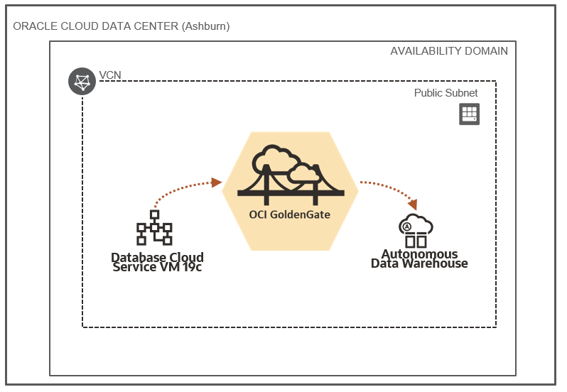
目次 :
- 1.ソース・データベースの設定
- 2.ターゲット・データベースの設定
- 3.OCI GGデプロイメントの作成
- 4.データベースの登録
- 5.Extractの作成
- 6.チェックポイント表の作成
- 7.Replicatの作成
- 8.データ連携の確認
前提条件 : 本チュートリアルではBaseDB、ADBともにデータベースの作成が完了しており、初期データとしてHRスキーマがそれぞれのデータベースにロードされていることを前提にしています。 各データベースの作成方法やデータロードの方法は下記手順をご確認ください。
- BaseDBの作成については、「101: Oracle Cloud で Oracle Database を使おう(BaseDB)」 をご参照ください。
- データ連携用のサンプルデータはHRスキーマを使用しています。BaseDBでのHRスキーマ作成方法は、「301: 移行元となるデータベースを作成しよう」 をご参照ください。
- ADBの作成については、「101:ADBインスタンスを作成してみよう」 をご参照ください。
- ADBの初期データロードについては、「303 : Data Pumpを利用してデータを移行しよう」 をご参照ください。
- チュートリアルの便宜上Autonomous Databaseへの接続文字列は「atp01_low」、BaseDBを含めて各ユーザのパスワードはすべて「Welcome#1Welcome#1」とします。
所要時間 : 約60分
1. ソース・データベースの設定
ソース・データベースであるBaseDBに対して下記の設定を行います。
-
GoldenGate管理者ユーザの作成
ソース・データベースにGG管理ユーザを作成し、必要な権限を付与します。このスキーマにGG関連オブジェクトが作成されます。 SQL*Plusを起動して以下を実行してください。
-- ユーザを作成(CDB構成のため接頭辞としてC##をつけた共通ユーザを作成) create user "C##OGGADMIN" identified by Welcome#1Welcome#1 default tablespace users temporary tablespace temp quota unlimited on users; -- dba権限の付与 grant dba to "C##OGGADMIN" container=all; -- GG実行権限の付与 exec dbms_goldengate_auth.grant_admin_privilege('C##OGGADMIN',container=>'ALL'); -
アーカイブ・ログ・モードの確認
GGのソース・データベースはアーカイブ・ログ・モードで運用されている必要があります。下記コマンドでアーカイブ・ログ・モードで運用されているか確認することができます。
-- アーカイブ・ログ・モードの確認 archive log list -
ENABLE_GOLDENGATE_REPLICATIONパラメータの設定 ENABLE_GOLDENGATE_REPLICATIONパラメータを設定して、GGが利用するデータベースの機能を有効化します。
-- ENABLE_GOLDENGATE_REPLICATIONパラメータの確認 show parameter enable_goldengate_replication -- ENABLE_GOLDENGATE_REPLICATIONパラメータの有効化 alter system set enable_goldengate_replication=true; -
サプリメンタル・ロギングの設定
GGに必要な情報がREDOログに記録されるように、ソース・データベースに対して サプリメンタル・ロギングの設定を行います。
下記コマンドで、サプリメンタル・ロギング・モードか、および強制ロギング・モードか確認します。
-- サプリメンタル・ロギング・モードか、および強制ロギング・モードか確認 select supplemental_log_data_min, force_logging from v$database;どちらかにNOがあった場合下記コマンドでモードを実行し、両方がYESになるように変更します。
-- サプリメンタル・ロギング・モードの設定 alter database add supplemental log data; -- 強制ロギング・モードの設定 alter database force logging;
- Note :サプリメンタル・ロギングとは
- 一般的にREDOログ・ファイルは、インスタンス・リカバリおよびメディア・リカバリに使用されます。これらの操作に必要なデータは、REDOログ・ファイルに自動的に記録されます。GoldenGateはREDOログから変更データを取得しますが、通常のREDOログの情報では足りないため、追加で必要な情報をREDOログ・ファイルに記録する必要があります。REDOログに追加の列を記録するためのデータベース機能をサプリメンタル・ロギングと呼びます。
2. ターゲット・データベースの設定
-
ターゲット・データベースであるADBのggadminユーザのアンロックを行います。
Autonomous DatabaseにはGoldenGate実行用のユーザがデータベース作成時点から用意されています。初期状態ではこのユーザはロックされていますので、アンロックを行っていきます。Aunotomous Databaseのデータベース・アクションを開きます。 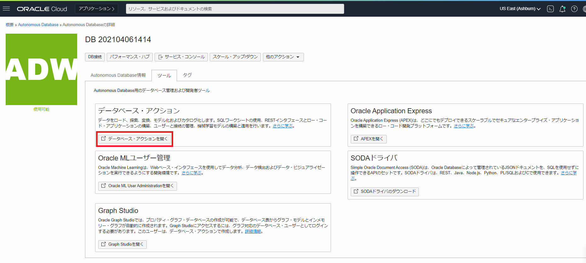
-
データベース・ユーザを選択します。
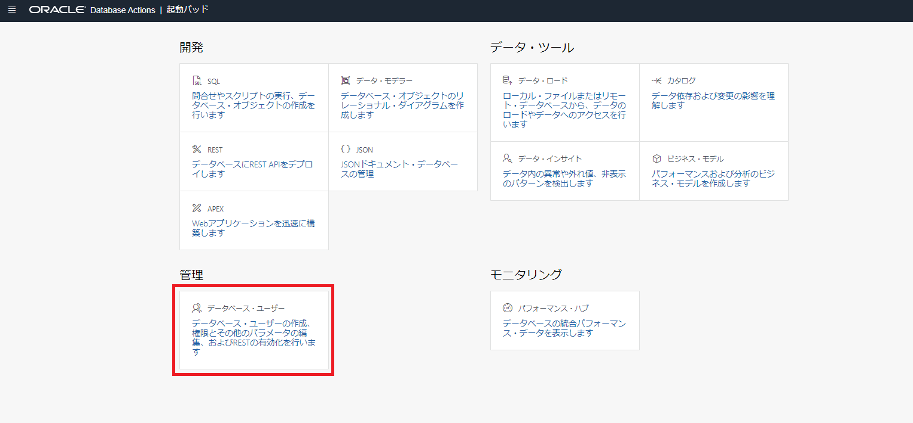
-
データベースのユーザ一覧が表示されます。既存で用意されているggadminユーザを見つけてください。
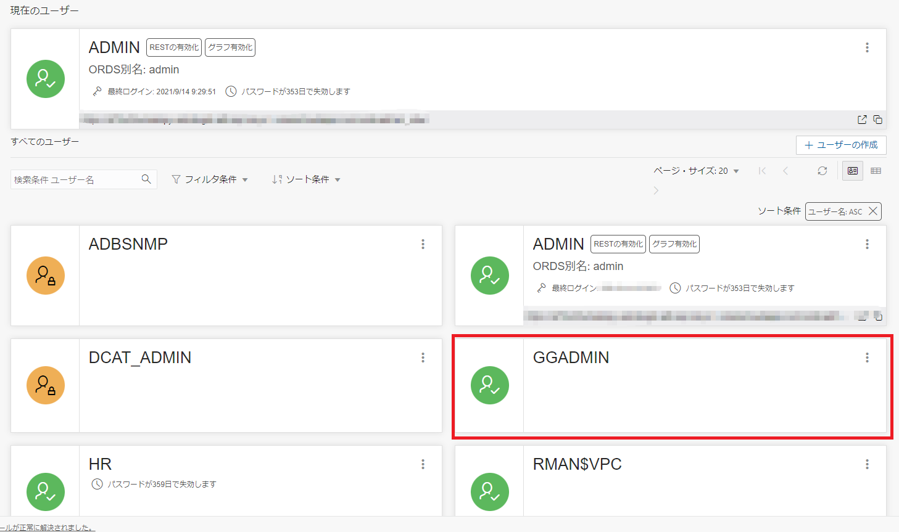
-
ggadminユーザのメニューボタンを開き 編集 を選択します。
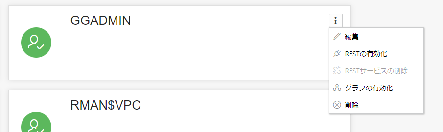
-
ggadminユーザのパスワードを設定し、アンロックします。
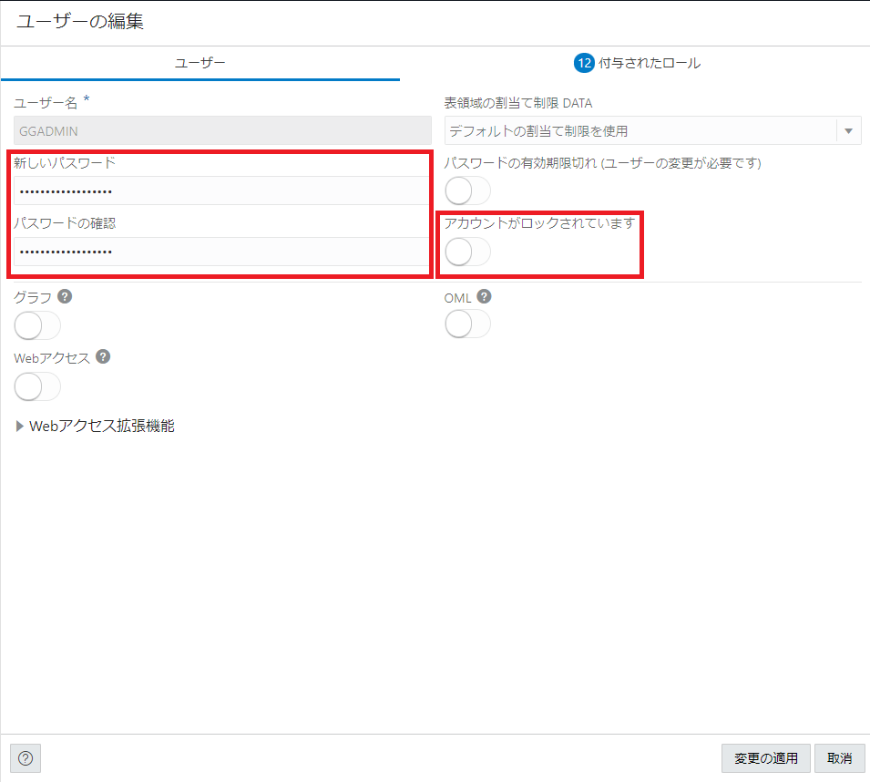
これでターゲット側のGGユーザを利用する準備ができました。
最後に念のため、データ連携用のHRスキーマに権限設定を行います。
-
ADBのHRスキーマに権限設定を行います。
-- 必要なユーザ権限の付与 grant create session to "HR"; alter user "HR" account unlock; grant connect, resource, dwrole to "HR"; grant unlimited tablespace to "HR";これでターゲット・データベース側のすべての準備が整いました。
3. OCI GGデプロイメントの作成
OCI GGデプロイメントを作成していきます。
-
OCIコンソール画面左上の メニュー をクリックし、サービス一覧から Oracle Database、GoldenGate を選択し、GoldenGateのサービス画面を表示します。 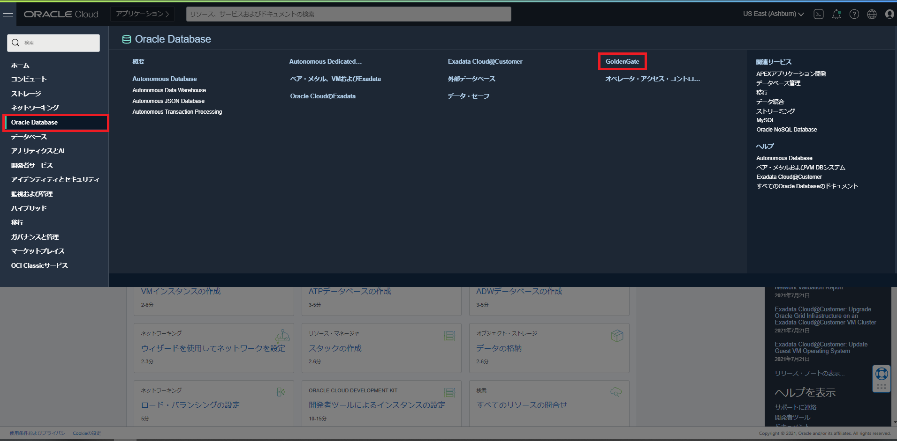
-
デプロイメントの作成 をクリックすると作成ウィンドウが立ち上がります。 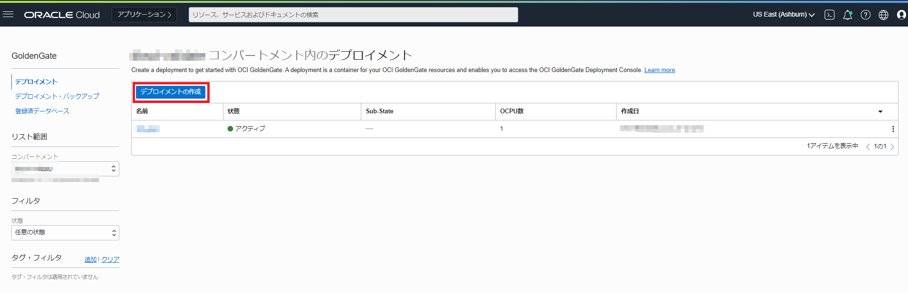
- 以下の記載例を参考に各項目を入力します。
- 名前 - 任意
- 説明 - 任意
-
OCPU数 - 1から24までの値で選択してください。動作確認であれば1OCPUで構いません。
実運用の参考値としてREDO生成量 60GB/h 程度であれば4OCPU＋自動スケーリングを選択してください。 - 自動スケーリング - 選択したOCPU数の最大3倍までの間でOCPUの利用率によって自動的にスケーリングされます。スケーリングはダウンタイムなくオンラインで実行され、
1時間あたりに消費されたOCPUの実平均が課金対象となります。 - サブネット - 任意
- ライセンス・タイプの選択 - 任意
- 拡張オプションの表示 - 任意（パブリック・エンドポイントの作成、エンドポイントのカスタマイズが可能であることをご確認ください。本チュートリアルではパプリック・エンドポイントにチェックを入れています。) 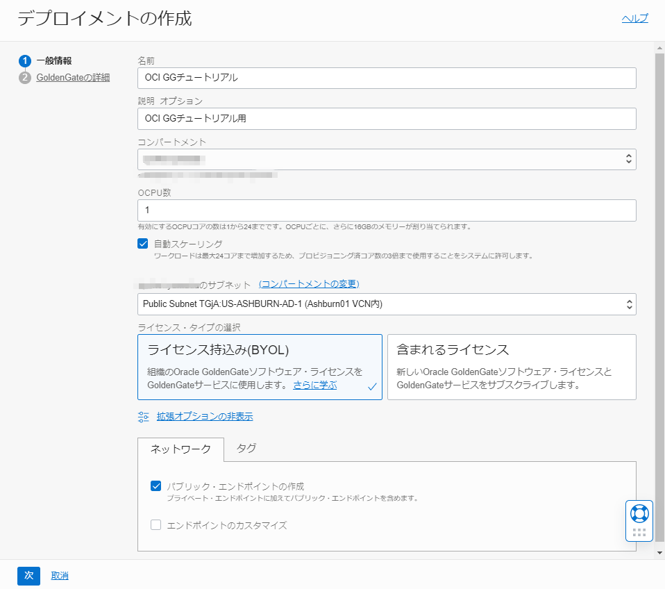
-
次 をクリックします。
- GoldenGateの詳細入力欄に、各項目を入力します。
- GoldenGateインスタンス名 - 任意
- 管理者ユーザ名 - 任意 (例:oggadmin)
- 名前管理者パスワード - 任意 (例:Welcome#1Welcome#1)
- 名前管理者パスワードの確認 - 任意 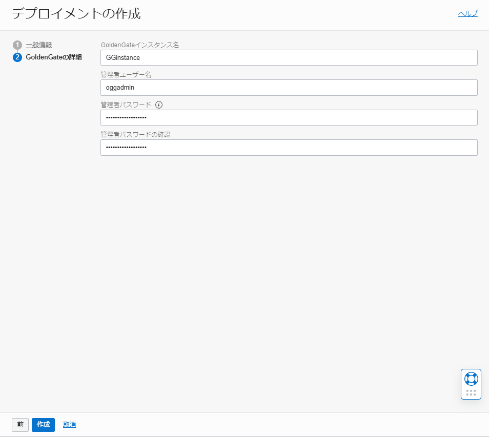
-
作成 をクリックするとデプロイメントの作成が開始されます。
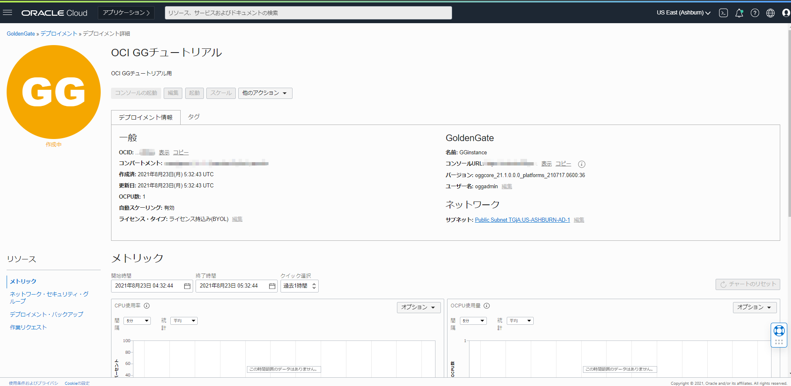
-
デプロイメントの作成が完了すると、アイコンが緑色に変わります。 今回は15分程度で完了しました。
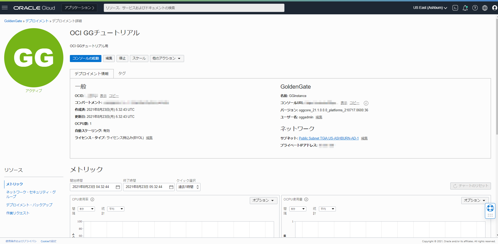
4. データベースの登録
OCI GGで利用するソースデータベース、ターゲットデータベースをOCI上に登録していきます。 OCI上にデータベースを登録しておくことで、この後の工程でExtract,Replicatの作成を行うことができます。
-
GoldenGateのサービス画面から 登録済みデータベース を選択します。 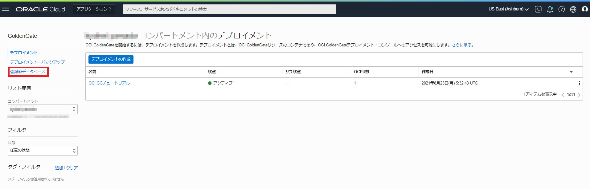
-
データベースの登録 を選択します。 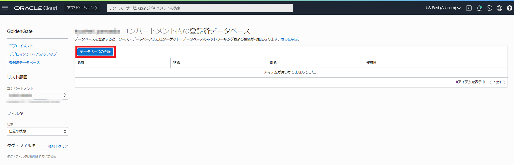
- データベースの登録 詳細入力欄に、各項目を入力します。まずはソースDBとなるBaseDBの登録を行っていきます。
- 名前 - 任意
- 別名 - 任意
- 説明 - 任意
- コンパートメント - 任意
- データベースの選択、データベース情報の入力 - OCI上のデータベースを登録する場合には データベースの選択 を選択します。オンプレミス上のデータベース等OCI上にあるデータベース以外を登録する場合には データベース情報の入力 を選択します。
どちらを選択するかによってこの後の入力欄が変化します。
今回はOCI上のBaseDBをソースDBとして登録するため、データベースの選択 を選択します。 -
データベース・タイプ - OCI上のどのデータベースを登録するかを選択します。
今回はOCI上のBaseDBをソースDBとして登録するため、DBシステム・データベース(ベア・メタル、VM、Exadata) を選択します。 - データベース・システム - 登録したいデータベース・システムを選択します。 BaseDBの場合データベース・システムを選択することでデータベース接続文字列まで自動入力されます。
- データベース・ホーム - 任意
- データベース - 任意
- データベースFQDN - 任意
- データベース接続文字列 - 任意（IPを指定することはできません。データベースFQDNで入力した名前を使用してください。TNS記述、簡易接続記述のどちらも使用可能です。）
- データベース・ユーザ名 - 任意
今回はあらかじめ作成しておいた c##oggadmin を指定します。 - データベース・ユーザ・パスワード - 入力したデータベース・ユーザのパスワードを指定してください。
- データベース・ウォレット - 任意
- データベース・IP - 登録したいデータベースのIPを入力してください。（2021/08現在SCAN IPを指定することはできません。RAC構成の場合はローカル・リスナーのVIPを入力してください。）
- サブネット - 任意 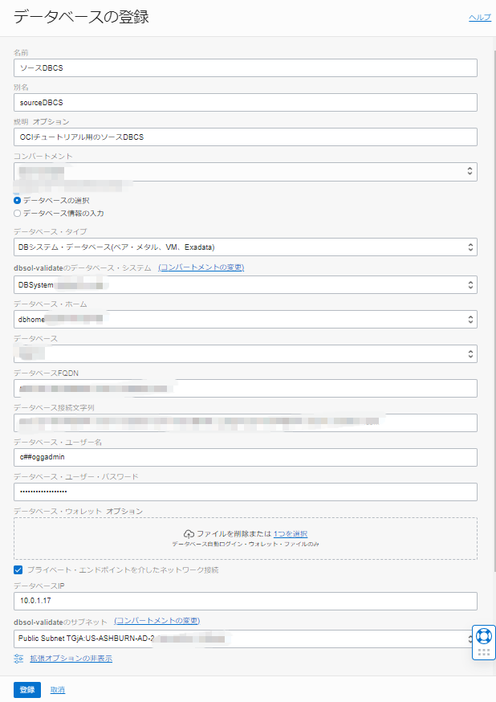
-
ターゲットとなるADBも同様にデータベースを登録します。
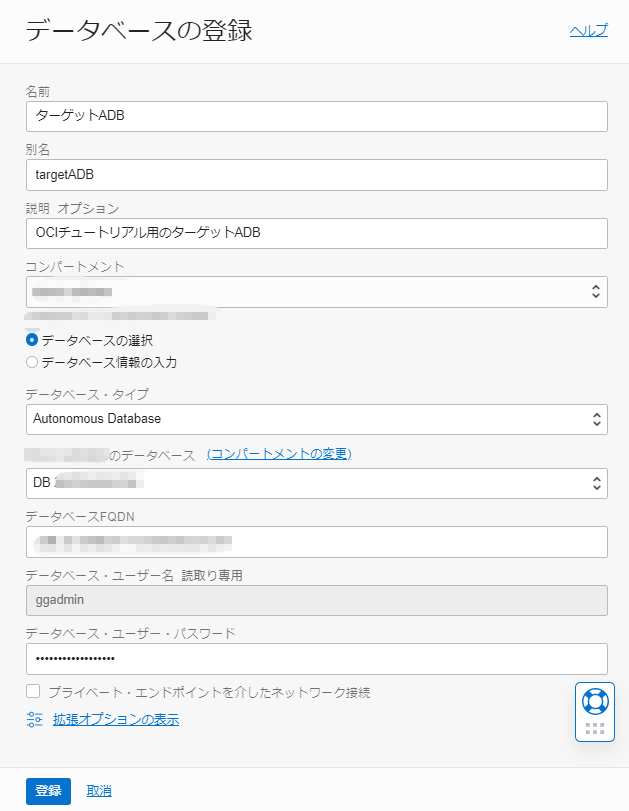
これでデータベースの登録は完了です。
5. Extractの作成
ここからはOCI GGのコンソール画面に接続し、BaseDBからデータを抽出するためのExtractを作成していきます。
-
デプロイメントの詳細画面から コンソールの起動 を選択します。 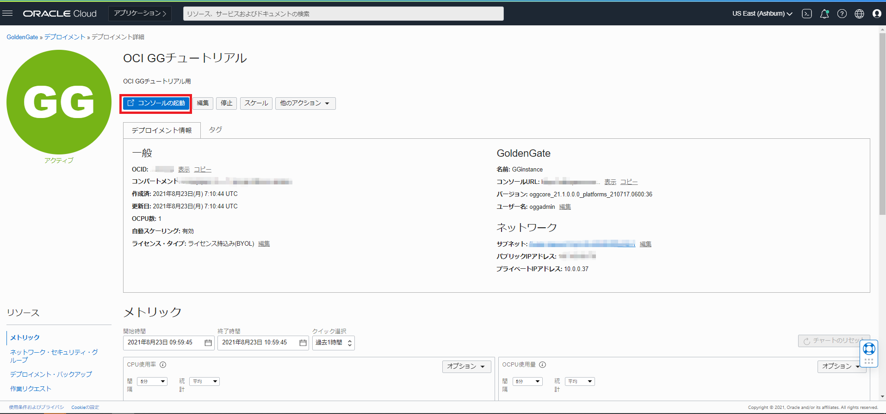
-
Oracle GoldenGate管理サーバー のサインイン画面にてデプロイメント作成時に指定したユーザ名、パスワードを入力してサインインします。 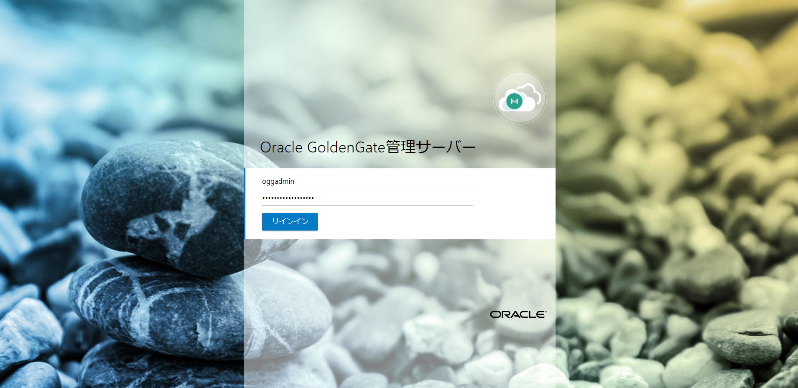
-
サインイン後、左上のメニューボタンから 構成 を選択します。 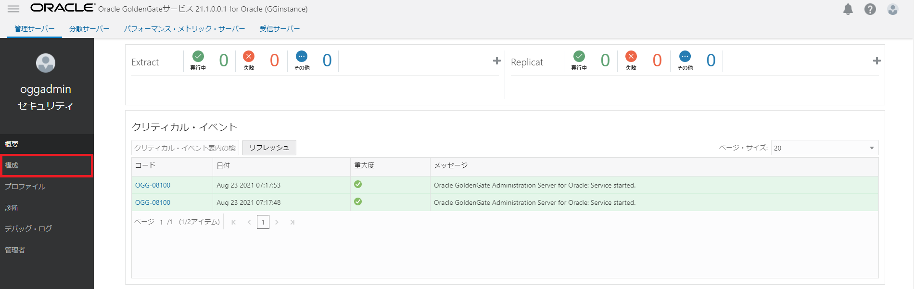
-
追加したいデータベースの データベースへの接続 を選択します。今回はソースデータベースであるBaseDBへ接続します。 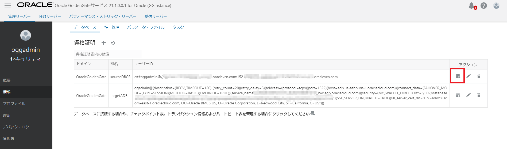
-
画面下部に表示されたTRANDATA情報の ＋ ボタンを選択し、抽出したいスキーマ、表、プロシージャを入力していきます。本チュートリアルではhrスキーマを入力し 発行 ボタンを選択します。 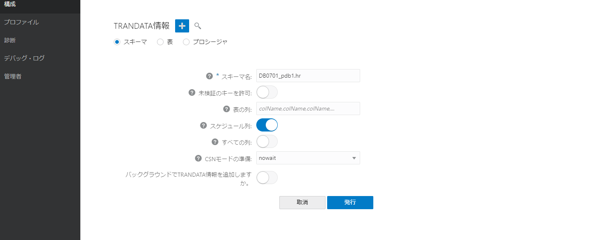
-
発行後に検索ボタンを選択し、スキーマ名を入力することで発行の確認ができます。 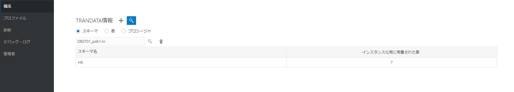
-
ここから実際にExtractを追加していきます。概要 画面に戻り、Extractの ＋ ボタンを選択します。 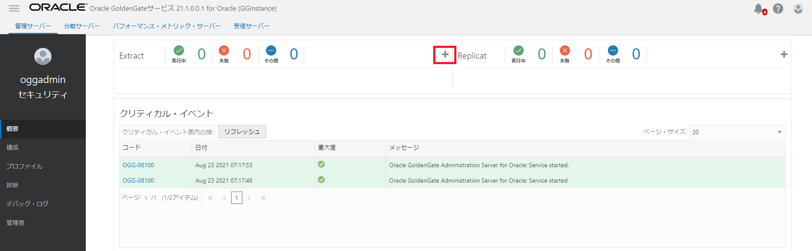
-
抽出タイプ選択画面にて 統合Extract を選択し次へいきます。 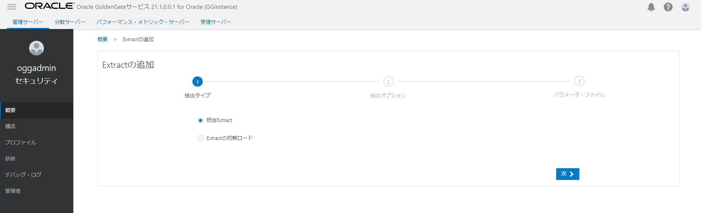
- 抽出オプション入力欄に、各項目を入力します。
本チュートリアルでは必須項目のみ入力していきます。
入力した項目は下記の通りです。- プロセス名 - hr1
- トレイル名 - h1
- PDBに登録 - DB0701_PDB1 (資格証明別名 選択後に表示されます)
- 資格証明ドメイン - OracleGoldenGate
- 資格証明別名 - sourceBaseDB 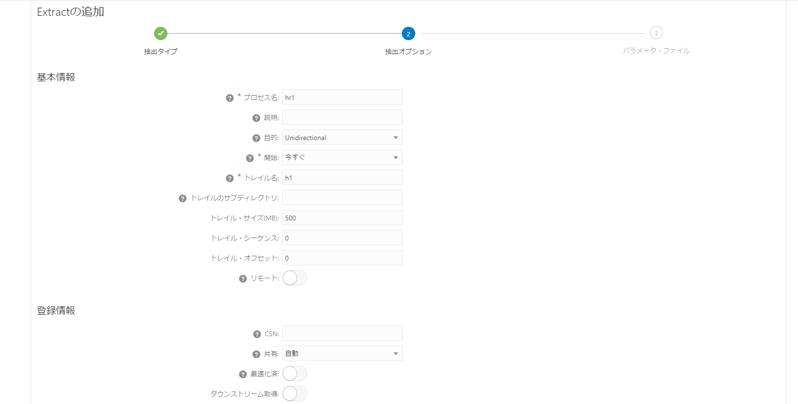 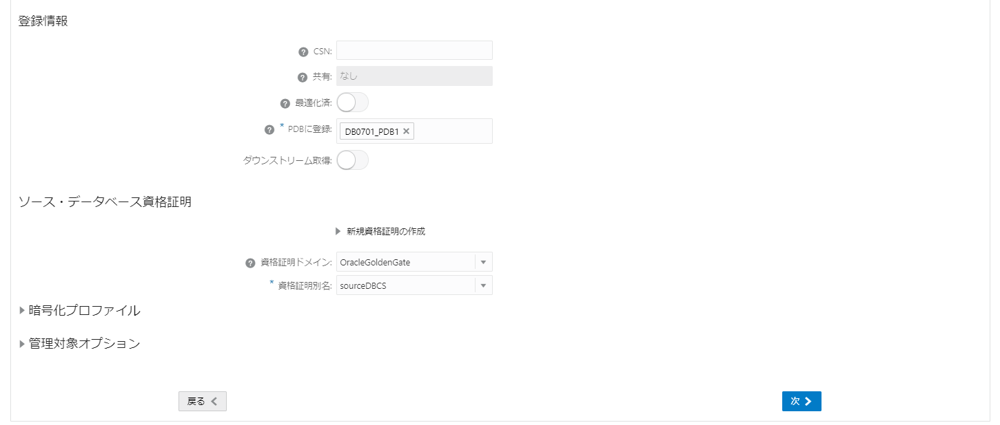
- パラメータ・ファイル入力欄にパラメータを入力します。
自動入力した値に加えてTABLE句を記載する必要があります。
今回は下記内容を追記しています。TABLE DB0701_pdb1.hr.*;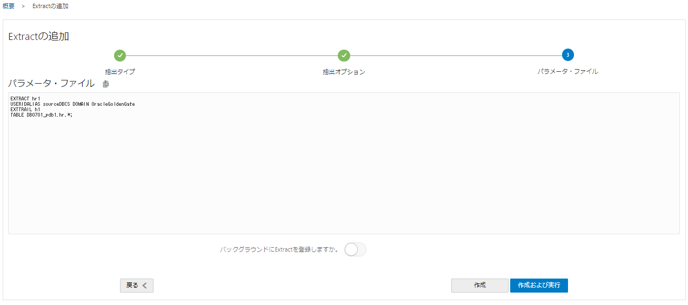
- 作成および実行 を選択しExtractを作成します。概要 画面にて作成したExtractが表示されます。 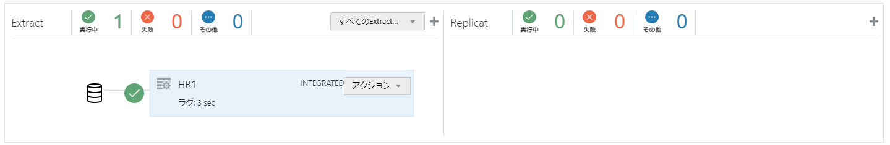
これでExtractの作成は完了です。
6. チェックポイント表の作成
非統合Replicatで必要になるチェックポイント表を作成していきます。
-
構成 画面から、ターゲットとなるADBの データベースへの接続 ボタンを選択します。 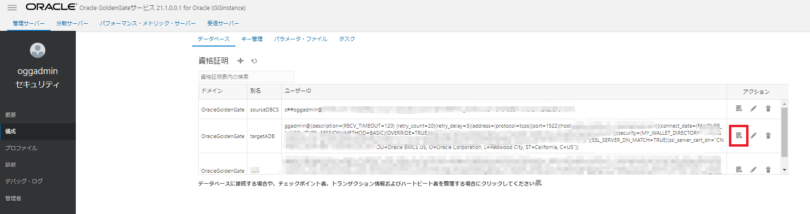
-
画面下部に表示されたチェックポイントの ＋ ボタンを選択し、チェックポイント表の名前を入力します。本チュートリアルではGGADMIN.CHKDATAと入力し 発行 ボタンを選択します。 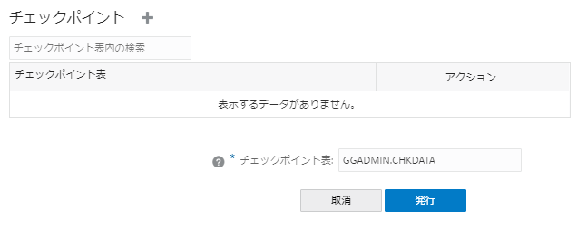
-
作成されたチェックポイント表が表示されます。 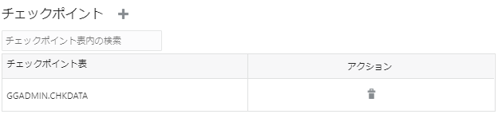
これでチェックポイント表の作成は完了です。
7. Replicatの作成
続いて適用プロセスであるReplicatを作成していきます。
-
概要 画面から、Replicatの ＋ ボタンを選択します。 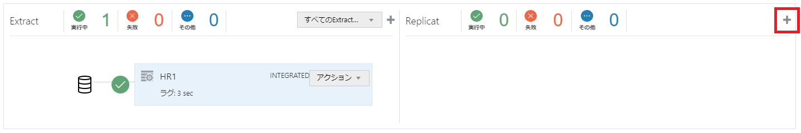
-
Replicatタイプ 選択画面から、非統合Replicat を選択します。 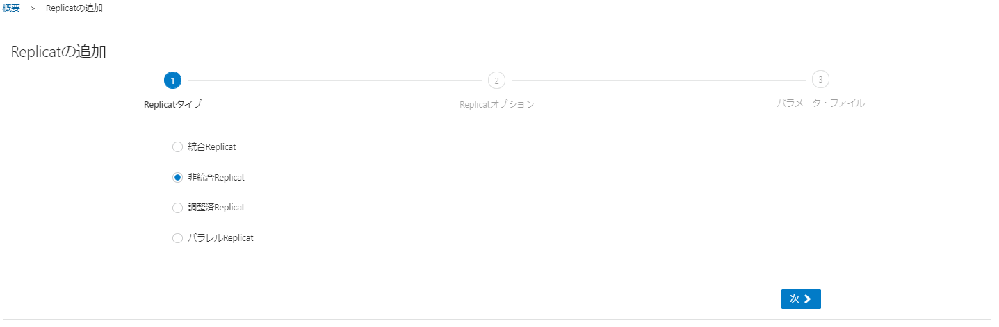
- Replicatオプション 入力欄に、各項目を入力します。
本チュートリアルでは必須項目のみ入力していきます。
入力した項目は下記の通りです。- プロセス名 - rep1
- 資格証明ドメイン - OracleGoldenGate
- 資格証明別名 - targetADB
- トレイル名 - h1 (extract作成時に指定したトレイル名を入力)
- チェックポイント表 - GGADMIN.CHKDATA (チェックポイント表作成時に指定した表名を入力) 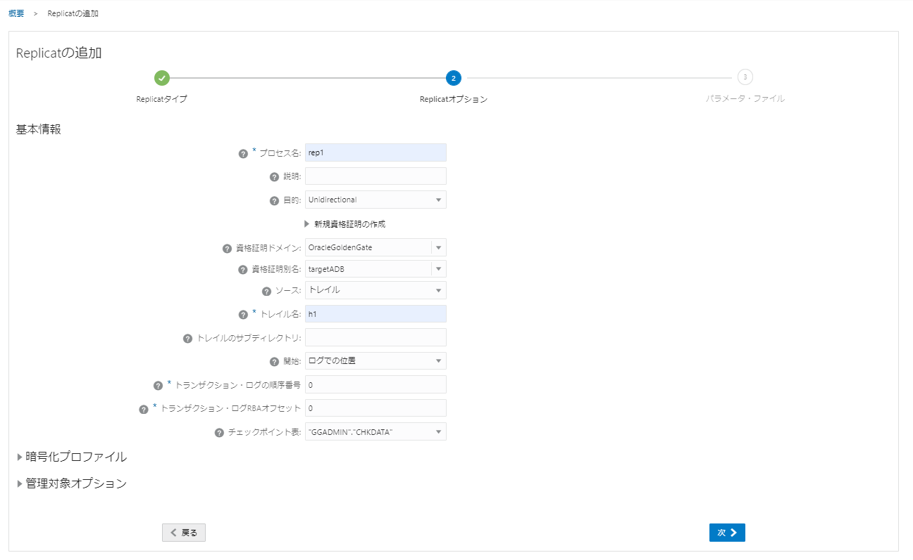
- パラメータ・ファイル 画面にて、Replicatに関するパラメータを入力することができます。作成および実行を選択します。
今回は下記内容を追記しています。
MAP pdb1.hr.*, TARGET hr.*;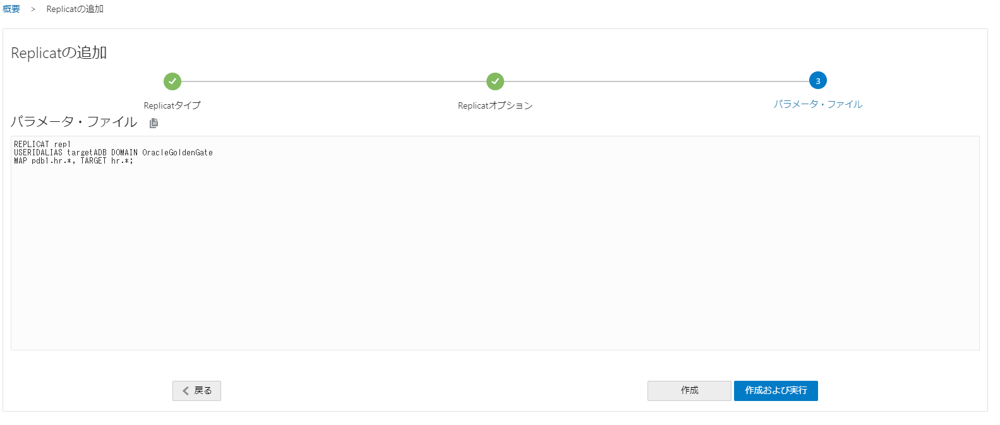
- 概要 画面に遷移し、作成したReplicatが表示されます。 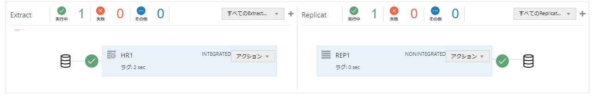
これでReplicatの作成は完了です。
8. データ連携の確認
Extract、Replicatの作成がそれぞれできました。最後にデータが連携されていることを確認しましょう。
-
ソース・データベースBaseDBのemployees表を1件更新します。
-- EMPLOYEES表のレコードを1件更新 UPDATE HR.EMPLOYEES SET FIRST_NAME = 'Oracle' WHERE EMPLOYEE_ID = 100; -
ターゲット・データベースADBにて更新が反映されているかを確認しましょう。
-- 更新レコードを検索 SELECT * FROM HR.EMPLOYEES WHERE EMPLOYEE_ID = 100; -
データ連携ができていればADB側でも更新が確認できます。 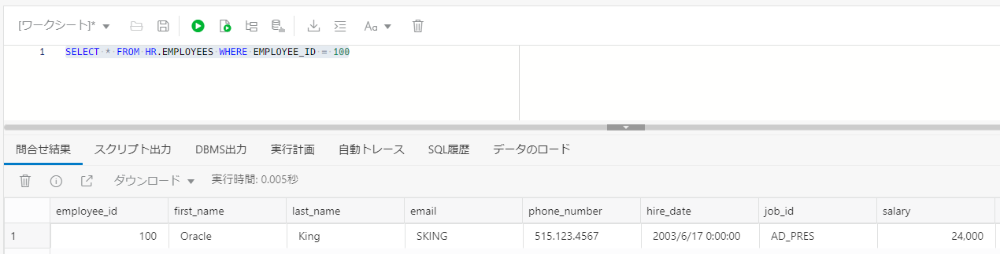
参考資料
OCI GoldenGate マニュアル